5 Week 5: Climate Projections and Impacts (II)
Load the required R packages:
Today you will work with the following climate model data from ESGF:
- Monthly mean temperature, historical
- Monthly min temperature, historical
- Monthly max temperature, historical
- Monthly mean temperature, SSP585
- Monthly min temperature, SSP585
- Monthly max temperature, SSP585
- Monthly mean precipitation, historical
- Monthly mean precipitation, SSP585
- Land Cover Fraction
I have added those files to our shared_files folder. In the Winter term you will need to download your own data sets. Here is how you would download the files to your home directory:
5.1 Koeppen-Geiger Climate Classification
Create a Koeppen-Geiger climate classification for the historical period
# Read data
## Temperature:
tmean <- rast("/global/teaching-project/sg51122000/shared_files/tas_Amon_CanESM5_historical_r10i1p1f1_gn_185001-201412.nc")
tmin <- rast("/global/teaching-project/sg51122000/shared_files/tasmin_Amon_CanESM5_historical_r10i1p1f1_gn_185001-201412.nc")
tmax <- rast("/global/teaching-project/sg51122000/shared_files/tasmax_Amon_CanESM5_historical_r10i1p1f1_gn_185001-201412.nc")
## Precipitation
pr <- rast("/global/teaching-project/sg51122000/shared_files/pr_Amon_CanESM5_historical_r10i1p1f1_gn_185001-201412.nc")
## Land Cover Fraction:
lcf <- rast("/global/teaching-project/sg51122000/shared_files/sftlf_fx_CanESM5_historical_r10i1p1f1_gn.nc")
# Get the dates
dates <- terra::time(tmean)
dates <- format(dates, "%Y-%m-%d")
dates <- base::as.Date(dates)
# Create raster time series
tmean <- rts(tmean, dates)
tmin <- rts(tmin, dates)
tmax <- rts(tmax, dates)
pr <- rts(pr, dates)
# Create a 12-month climatological mean dataset for the 30-year period 1971-01-16 to 2000-12-16
tmean12 <- apply.months(tmean[['1971/2000']],'mean')
tmin12 <- apply.months(tmin[['1971/2000']],'mean')
tmax12 <- apply.months(tmax[['1971/2000']],'mean')
pr12 <- apply.months(pr[['1971/2000']],'mean')
# Convert units from K to C
tmean12 <- tmean12 - 273.15
tmin12 <- tmin12 - 273.15
tmax12 <- tmax12 - 273.15
# Convert units from kg m-2 s-1 to mm per month
pr12 <- pr12 * 86400 * c(31, 28.25, 31, 30, 31, 30, 31, 31, 30, 31, 30, 31)
# Create a mask that masks out the ocean
## Set all grid cells with a land cover fraction equal to zero to NA:
lcf[lcf == 0] <- NA
## Set all other values equal to one
lcf <- lcf - lcf + 1
k1 <- climetrics::kgc(p=pr12 ,tmin = tmin12 ,tmax=tmax12, tmean = tmean12)
# Mask out the ocean
k1 <- k1 * lcf
# Plot data
my.col <- map.pal("elevation", n = 30)
plot(k1, col = my.col, main = "Koeppen-Geiger Climate Classification \n (CanESM5, historical)")
map("world2", add = TRUE)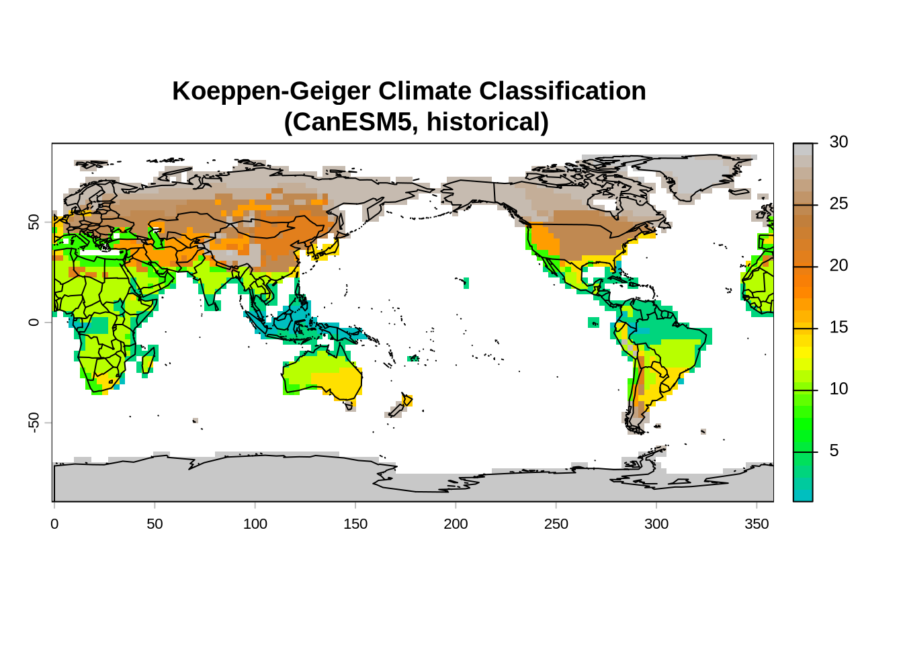
The numbers in the Figure above refer to the following Koeppen-Geiger climate classification
| Code | Class | Name | Description |
|---|---|---|---|
| 1 | 1 | Af | Tropical, rainforest |
| 2 | 1 | Am | Tropical, monsoon |
| 3 | 1 | Aw | Tropical, savannah |
| 4 | 2 | BWh | Arid, desert hot |
| 5 | 2 | BWk | Arid, desert cold |
| 6 | 2 | BSh | Arid, steppe hot |
| 7 | 2 | BSk | Arid, steppe cold |
| 8 | 3 | Csa | Temperate, dry and hot summer |
| 9 | 3 | Csb | Temperate, dry and warm summer |
| 10 | 3 | Csc | Temperate, dry and cold summer |
| 11 | 3 | Cwa | Temperate, dry winter and hot summer |
| 12 | 3 | Cwb | Temperate, dry winter and warm summer |
| 13 | 3 | Cwc | Temperate, dry winter and cold summer |
| 14 | 3 | Cfa | Temperate, without dry season and hot summer |
| 15 | 3 | Cfb | Temperate, without dry season and warm summer |
| 16 | 3 | Cfc | Temperate, without dry season and cold summer |
| 17 | 4 | Dsa | Cold, dry and hot summer |
| 18 | 4 | Dsb | Cold, dry and warm summer |
| 19 | 4 | Dsc | Cold, dry and cool summer |
| 20 | 4 | Dsd | Cold, dry summer and very cold winter |
| 21 | 4 | Dwa | Cold, dry winter and hot summer |
| 22 | 4 | Dwb | Cold, dry winter and warm summer |
| 23 | 4 | Dwc | Cold, dry winter and cool summer |
| 24 | 4 | Dwd | Cold, dry winter and very cold winter |
| 25 | 4 | Dfa | Cold, without dry season and hot summer |
| 26 | 4 | Dfb | Cold, without dry season and warm summer |
| 27 | 4 | Dfc | Cold, without dry season and cool summer |
| 28 | 4 | Dfd | Cold, without dry season and very cold winter |
| 29 | 5 | ET | Polar, tundra |
| 30 | 5 | EF | Polar, frost |
Create a Koeppen-Geiger climate classification for the future based on CanESM5 SSP5 for the 2071-2100 period. Call the Koeppen-Geiger climate classification k2 rather than k1. Your output should look similar to the Figure below
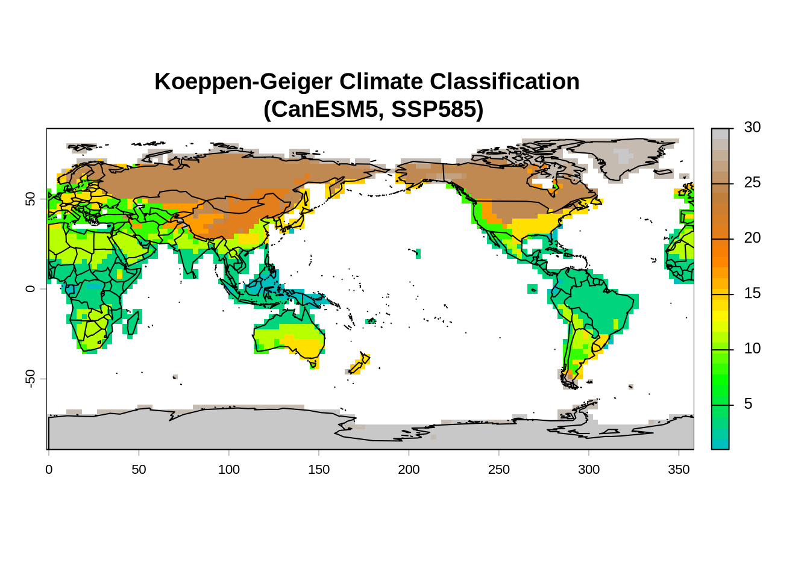
Let’s plot them next to each other:
par(mfrow = c(2,1))
my.col <- map.pal("elevation", n = 30)
plot(k1, col = my.col, main = "Koeppen-Geiger (CanESM5, historical)", cex.main = 0.75)
map("world2", add = TRUE)
plot(k2, col = my.col, main = "Koeppen-Geiger (CanESM5, SSP585)", cex.main = 0.75)
map("world2", add = TRUE)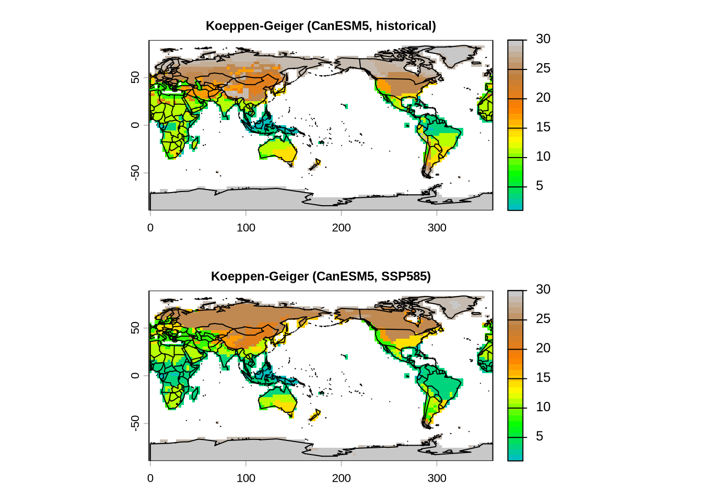
Let’s evaluate how the Tundra changes. From the table above you can see that the Tundra corresponds to class 29. Isolate class 29 in both k1, and k2, convert them to polygons, and plot them on top of each other using hatched areas.
k1.class <- k1
k1.class[k1.class != 29] <- NA
k1.class <- k1.class - k1.class + 1
k2.class <- k2
k2.class[k2.class != 29] <- NA
k2.class <- k2.class - k2.class + 1
# Convert to polygon
k1.class <- as.polygons(k1.class, dissolve = TRUE)
k2.class <- as.polygons(k2.class, dissolve = TRUE)
# Crop region (Extratropics, Northern Hemisphere)
region <- c(0, 360, 40, 90)
k1.class <- crop(k1.class, region)
k2.class <- crop(k2.class, region)
map(
"world2",
interior = FALSE,
boundary = TRUE,
fill = TRUE,
col = "grey",
border = "grey",
bg = "NA",
add = FALSE,
ylim = c(40, 90)
)
box()
plot(
k1.class,
density = 15,
add = TRUE,
col = "blue",
border = "blue"
)
plot(
k2.class,
density = 15,
add = TRUE,
col = "red",
border = "red",
angle = -45
)
legend(
"topleft",
c("Current Tundra", "Future Tundra") ,
pch = 16,
col = c("blue", "red") ,
bty = "n"
)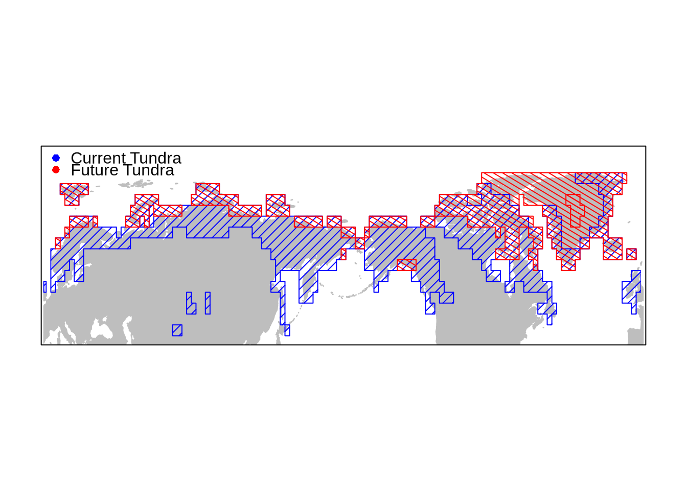
- Repeat the same exercise for a different climate class
5.2 Climate Change Metrics
- Create raster time series used for computing climate change metrics below
rm(list = ls())
# Read data
tmean.hist <- rast("/global/teaching-project/sg51122000/shared_files/tas_Amon_CanESM5_historical_r10i1p1f1_gn_185001-201412.nc")
tmin.hist <- rast("/global/teaching-project/sg51122000/shared_files/tasmin_Amon_CanESM5_historical_r10i1p1f1_gn_185001-201412.nc")
tmax.hist <- rast("/global/teaching-project/sg51122000/shared_files/tasmax_Amon_CanESM5_historical_r10i1p1f1_gn_185001-201412.nc")
tmean.ssp <- rast("/global/teaching-project/sg51122000/shared_files/tas_Amon_CanESM5_ssp585_r10i1p1f1_gn_201501-210012.nc")
tmin.ssp <- rast("/global/teaching-project/sg51122000/shared_files/tasmin_Amon_CanESM5_ssp585_r10i1p1f1_gn_201501-210012.nc")
tmax.ssp <- rast("/global/teaching-project/sg51122000/shared_files/tasmax_Amon_CanESM5_ssp585_r10i1p1f1_gn_201501-210012.nc")
pr.hist <- rast("/global/teaching-project/sg51122000/shared_files/pr_Amon_CanESM5_historical_r10i1p1f1_gn_185001-201412.nc")
pr.ssp <- rast("/global/teaching-project/sg51122000/shared_files/pr_Amon_CanESM5_ssp585_r10i1p1f1_gn_201501-210012.nc")
# Stack past and future together
tmean <- c(tmean.hist, tmean.ssp)
tmin <- c(tmin.hist, tmin.ssp)
tmax <- c(tmax.hist, tmax.ssp)
pr <- c(pr.hist, pr.ssp)
rm(tmean.hist, tmean.ssp,
tmin.hist, tmin.ssp,
tmax.hist, tmax.ssp,
pr.hist, pr.ssp)
# Get the dates
dates <- terra::time(tmin)
dates <- format(dates, "%Y-%m-%d")
dates <- base::as.Date(dates)
# Convert units from K to C
tmean <- tmean - 273.15
tmin <- tmin - 273.15
tmax <- tmax - 273.15
# Convert units from kg m-2 s-1 to mm per month
days_per_month <- lubridate::days_in_month(dates)
pr <- pr * 86400 * days_per_month
# Create raster time series
tmean <- rts(tmean, dates)
tmin <- rts(tmin, dates)
tmax <- rts(tmax, dates)
pr <- rts(pr, dates)
# Ocean mask
lcf <- rast("/global/teaching-project/sg51122000/shared_files/sftlf_fx_CanESM5_historical_r10i1p1f1_gn.nc")
# Create a mask that masks out the ocean
## Set all grid cells with a land cover fraction equal to zero to NA:
lcf[lcf == 0] <- NA
## Set all other values equal to one
lcf <- lcf - lcf + 15.2.1 Climate Metric (1): Standardized local anomalies
Standardized local anomalies give the difference of a variable divided by its historical interannual variability expressed in terms of standard deviation. High standardized anomaly values correspond to large changes compared to its historical inter-annual variability.
cm1 <- sed(pr ,tmin ,tmax , t1='1971/2000',t2='2071/2100')
cm1 <- cm1 * lcf
plot(cm1, col=map.pal("elevation", n = 100), main='Standardized Local Anomalies (-)')
map("world2", add = TRUE, interior = FALSE)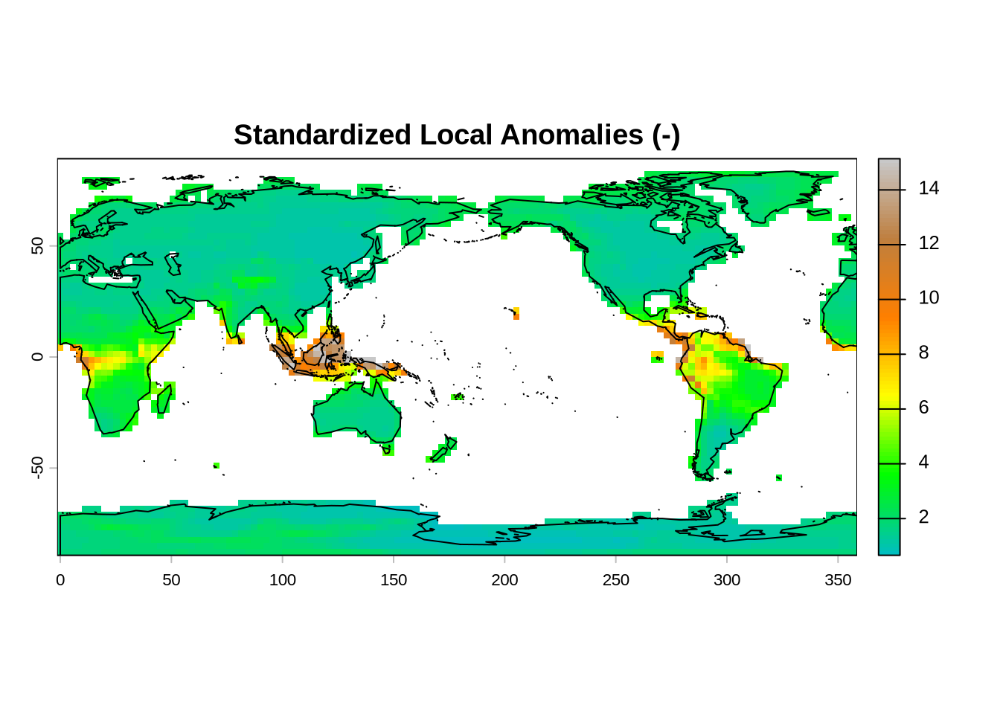
- In what regions are the projected changes particularly large?
- Are these large changes due to changes in temperature or precipitation?
- To answer this question, calculate the same climate metric for temperature and precipitation separately.
5.2.2 Climate Metric (2): Changes in probability of local climate extremes
This climate metric shows how the probability of climate extremes, expressed as percentiles, are projected to change in the future. The example below assesses the change in the probability of hot (0.95 percentile of monthly mean temperature) and dry (0.05 percentile of precipitation) climate conditions
cm2 <- localExtreme(tmean , pr, t1='1971/2000',t2='2071/2100', extreme = c(0.95,0.05))
cm2 <- cm2 * lcf
plot(cm2, col = map.pal("elevation", n = 100), main='Changes in probability of local climate extremes (hot and dry) (-)')
map("world2", add = TRUE, interior = FALSE)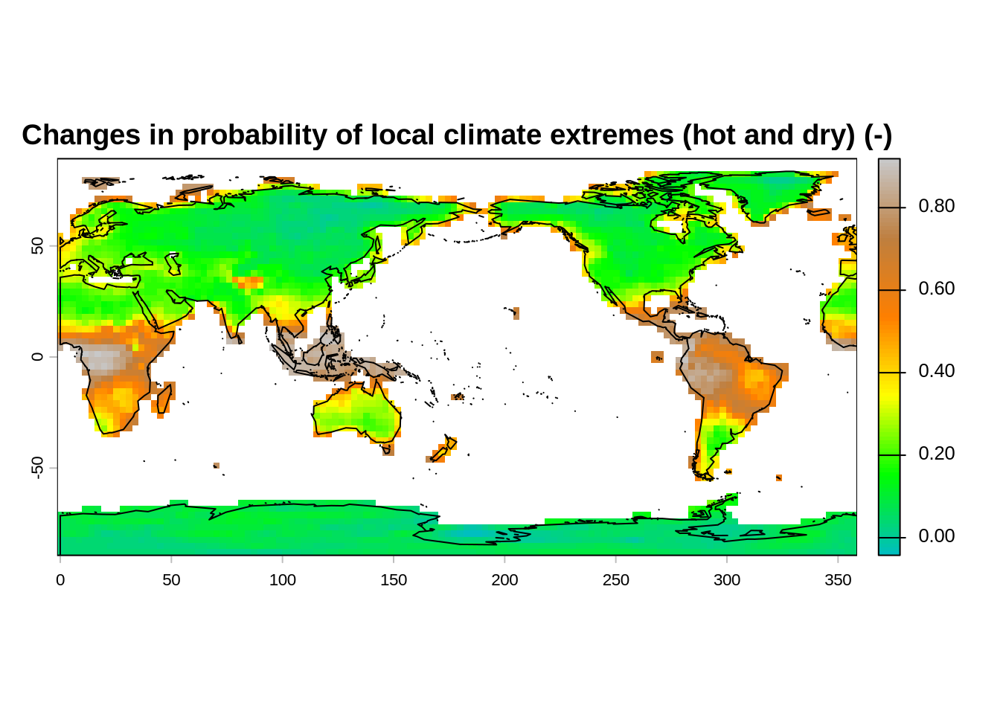
- Calculate the same climate metric but for wet extremes
5.2.3 Climate Metric (3): Change in area of analogous climates
This climate metric gives the relative change in the area of a given climate class in percentage.
cm3 <- aaClimate(pr, tmin, tmax, tmean, t1='1971/2000',t2='2071/2100')
cm3 <- cm3 * lcf
breaks <- seq(-125, 125, 25)
my.col <- rev(map.pal("differences", n = length(breaks) - 1))
plot(cm3, type = "continuous", col = my.col, breaks = breaks, main='Changes in the Area of Analogous Climate (%)')
map("world2", add = TRUE, interior = FALSE)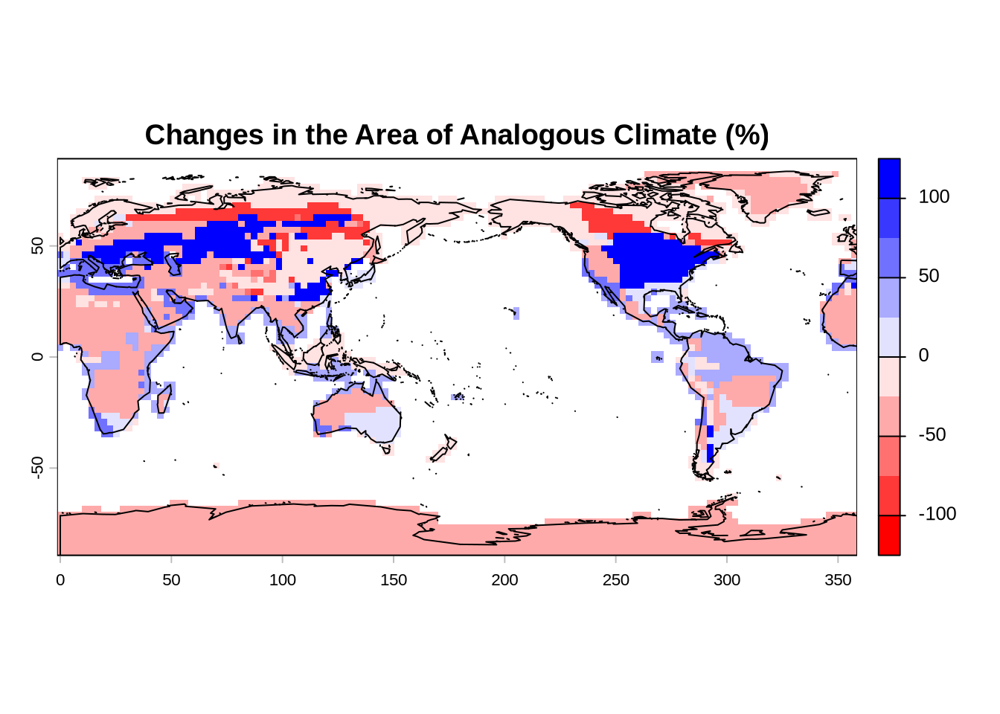
5.2.4 Climate Metric (4): Change in the distance to analogous climates
This metric expresses the change in distance to locations with an analogous climate as follows:
Quantify the distances to all cells with analogous climates in the time periods 1 and 2
For each cell, calculate the median of the great-circle distances below the 10th percentile of the distribution of all values for time periods 1 and 2
Calculate the change in the distances
Negative values indicate a decrease in distance
Positive values indicate an increase in distance
cm4 <- daClimate(precip = pr, tmin = tmin, tmax = tmax, tmean = tmean, t1='1971/2000',t2='2071/2100')
cm4 <- cm4/1000 * lcf
breaks <- seq(-2000, 2000, 10)
my.col <- rev(map.pal("differences", n = length(breaks) - 1))
plot(cm4, type = "continuous", col = my.col, breaks = breaks, main='Change in the distance to analogous climates (km)')
map("world2", add = TRUE, interior = FALSE)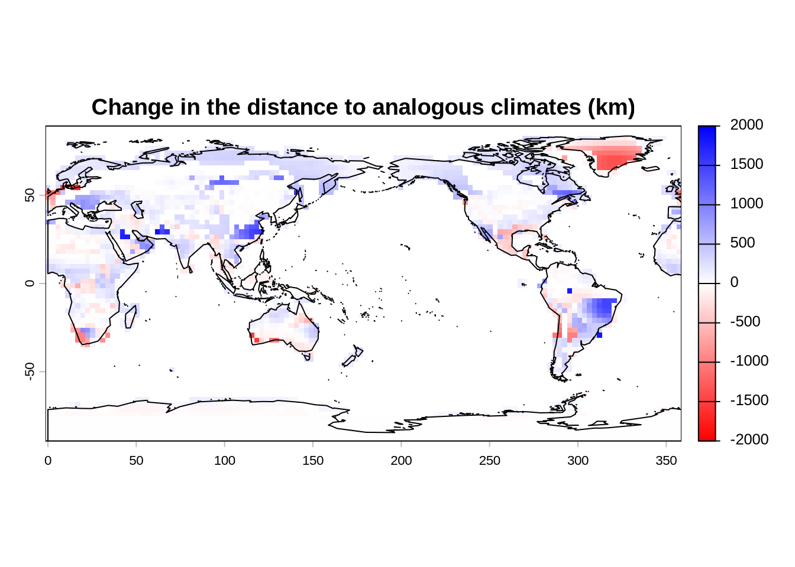
5.2.5 Climate Metric (5): Novel climates
This climate metric quantifies the dissimilarities between climate variables of two time periods. This metric uses standard euclidean distance between each cell in Time 2 and all cells in Time 1 and retains the minimum of those distances. The inter-annual standard deviation for each variable is used for the standardization. The larger the value, the more dissimilar the climate in Time 2 is in relation to the global pool of potential climatic analogues.
cm5 <- novelClimate(pr, tmin, tmax, t1='1971/2000',t2='2071/2100')
cm5 <- cm5 * lcf
plot(cm5, col = map.pal("elevation", n = 100), main='Novel Climates')
map("world2", add = TRUE, interior = FALSE)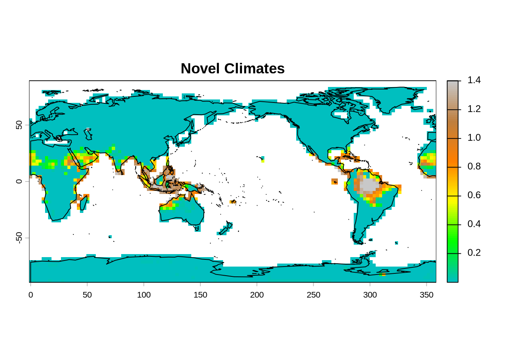
- Is the novel climate in the Amazon due to changes in temperature or precipitation?
5.2.6 Climate Metric (5): Climate Change Velocity
- Ratio of the temporal climatic gradient at a given locality to the spatial climatic gradient across neighboring cells
- Example: (Celsius per unit of time) / (Celsius per unit of distance) = distance per unit of time
- The metric represents the speed along Earth’s surface needed to maintain a constant climate
dv <- dVelocity(pr, tmin, tmax, t1='1971/2000',t2='2071/2100')
dv <- dv * lcf
plot(dv, col=map.pal("elevation", n = 100), main='Velocity of Climate Change (km per year)')
map("world2", add = TRUE, interior = FALSE)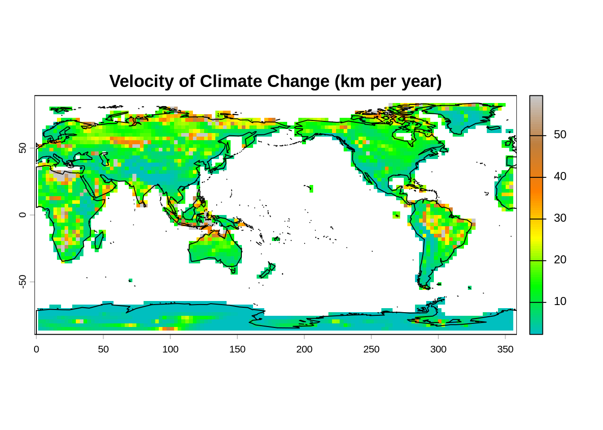
- Is climate change velocity generally larger or smaller in mountains? Explain your answer.
- Consider a frog species living in the Amazon of Southern Colombia. Let’s further assume that the frog species is intolerant to changes in climate. How fast does the frog species need to migrate to avoid extinction? Have a look at the map below to find the answer.
breaks <- seq(0, 60, 5)
my.col <- map.pal("elevation", n = length(breaks) - 1)
plot(dv, type = "continuous", col=my.col, breaks = breaks, main='Velocity of Climate Change (km per year)', xlim = c(280, 320), ylim = c(-20, 10))
map("world2", add = TRUE, interior = TRUE)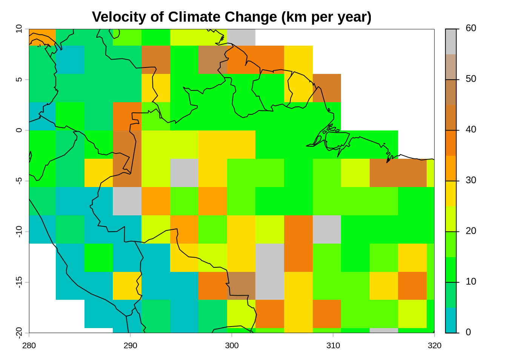